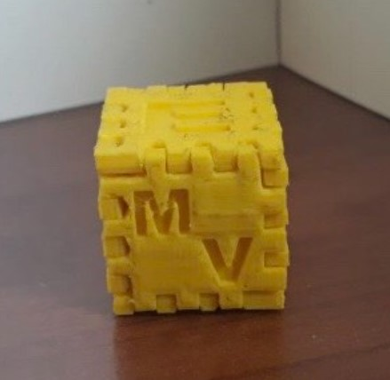
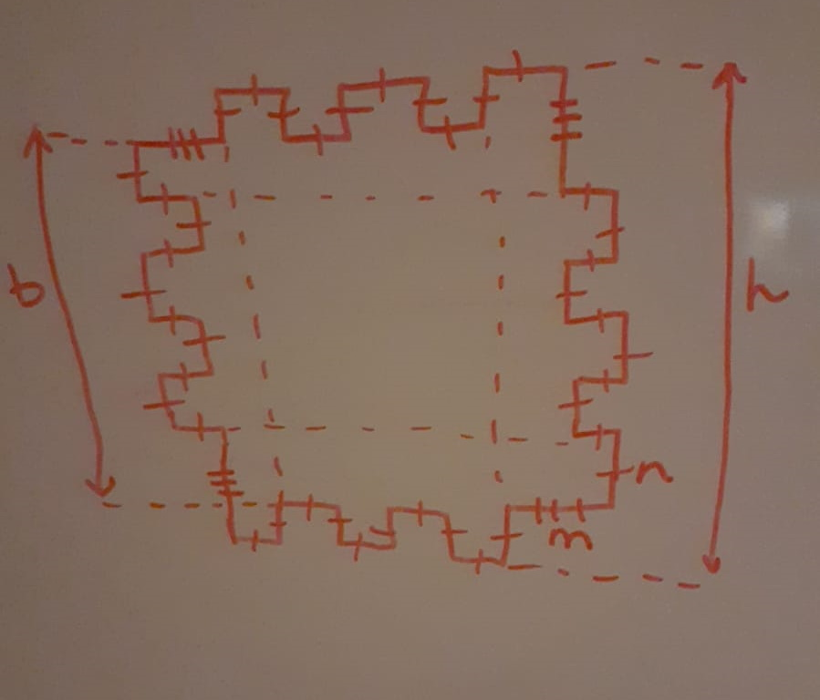
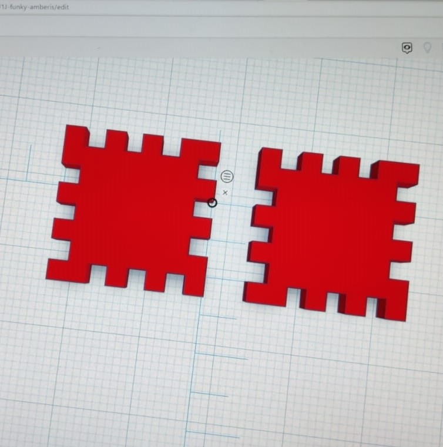
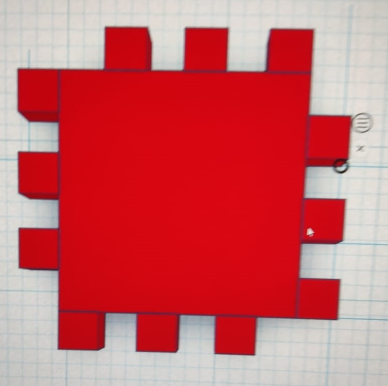

Kuba skaldnes izvēlējāmies veidot pēc dotā piemēra:
Piemērs tika veidots no 2 skaldņu tipiem: četri apkārt - viena tipa, augša un apakša - otra tipa
Skice ar pirmā tipa skaldni:
Tā kā grupā bijām 3, katrs veidoja 2 skaldnes. Divi no mums - Francis un Bērtulis - radīja pirmā tipa skaldnes, un trešā dalībniece - Toska - radīja otrā tipa skaldnes.
Mēs izlēmām, ka katram grupas biedram uz vienas no skaldnēm jāizveido kuba malā robs ar sava uzvārda iniciāli, un uz otras skaldnes - simbolu
| Cilvēks | Skaldnes tips | Iniciālis | Simbols |
|---|---|---|---|
| Francis | 1. | V | Saule |
| Bērtulis | 1. | Š | Sniegpārsla |
| Toska | 2. | P | Egle |
Radot skaldnes, mūsu grupas biedri tās veidoja pēc vienas no divām metodēm - 1) no liela kvadrāta izņemot robus vai 2) mazam kvadrātam pievienojot izcilņus. Divi cilvēki lietoja otro metodi, bet viens lietoja pirmo.
Darba beigās noskaidrojām, ka Francis bija uztaisījis nepareizo skaldņu tipu:
Tomēr tas viegli tika izlabots, noņemot dažus no izcilņiem:
Saliekot visu grupas veikumu vienā dokumentā, radās problēma, ka viens grupas biedrs bija saglabājis abas savas skaldnes vienā dokumentā, tādēļ tās nevarēja kustināt atsevišķi. To mēs izlabojām, saglabājot abas skaldnes atsevišķos failos.